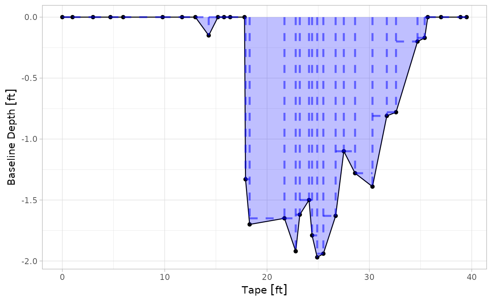

Calculating the cross-sectional area of a stream
For this guide, we’ll take two approaches for calculating the area: one for non-georeferenced data (i.e., just a table with your measurements, as seen in testxs), and one for georeferenced data (made by sf).
Non-georeferenced data
Suppose you have a dataset like that which exists in testxs:
library(excess)
library(dplyr)
#>
#> Attaching package: 'dplyr'
#> The following objects are masked from 'package:stats':
#>
#> filter, lag
#> The following objects are masked from 'package:base':
#>
#> intersect, setdiff, setequal, union
library(ggplot2)
library(units)
#> udunits database from /usr/share/xml/udunits/udunits2.xml
head(testxs)
#> # A tibble: 6 × 3
#> TAPE InvertRod Bankful
#> [ft] [ft] [ft]
#> 1 0 -0.83 -3.29
#> 2 1 -1.01 -3.29
#> 3 3 -1.48 -3.29
#> 4 4.7 -1.19 -3.29
#> 5 5.95 -1.19 -3.29
#> 6 9.8 -1.93 -3.29You’ll notice that the data has linear units listen in [ft]. This comes from the units package. Units of measurement aren’t necessary – the functions work fine without them – but it’s definitely good practice to ensure you’re calculating accurate results!
Anyways, we wish to calculate the cross-sectional area of the stream, and we have both the “x coordinate” (TAPE) and the “z-coordinate” (InvertRod). The Bankful column represents the bankful height, which is the “reference” for the depth measurement.
To calculate the cross-sectional area, excess uses the Trapezoidal Rule:

The trapezoidal area can be defined as:
\[A = \frac{1}{2} (x_n - x_{n-1})(y_n + y_{n-1})\]
For an implementation in R, we can use the dplyr::lag() and dplyr::lead() functions.